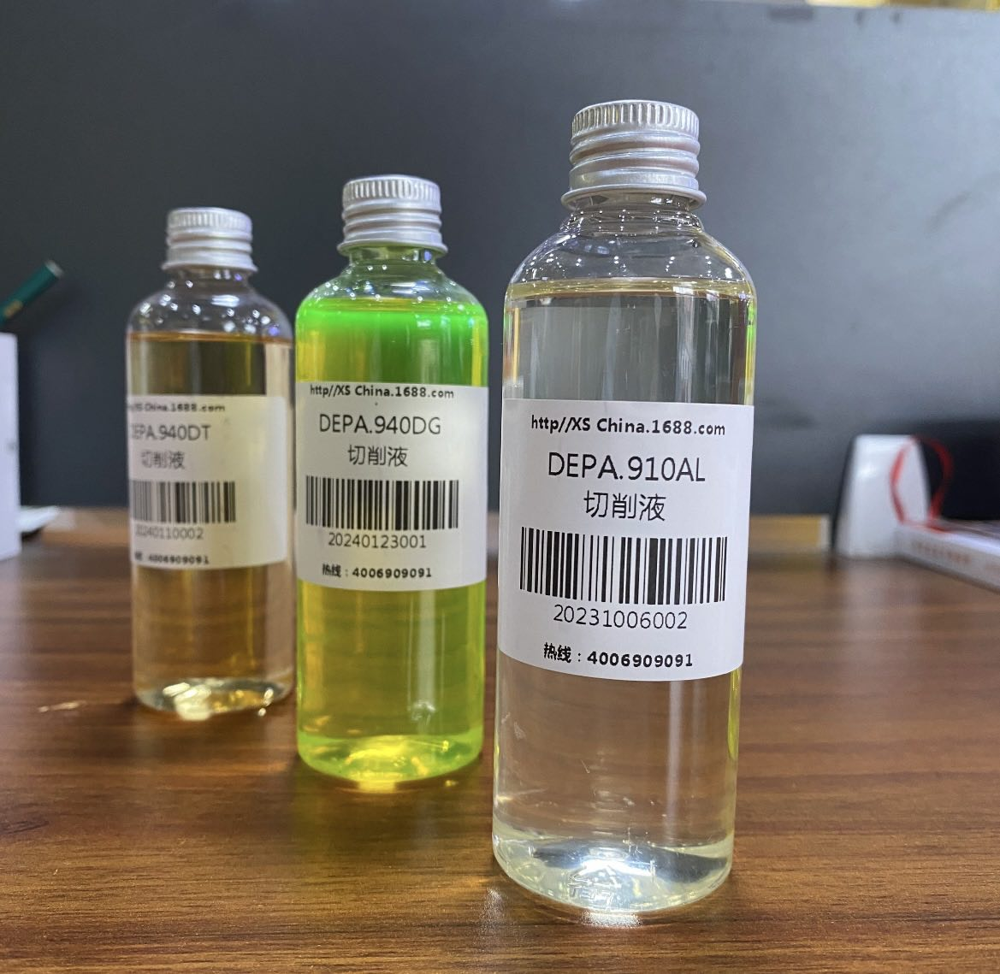
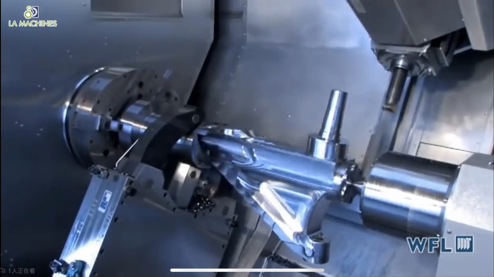

The laser cutting process will produce a strong light beam, the operator must wear special laser protective glasses
to prevent eye injury.
the beam generated by laser cutting and the splashing molten material may cause damage to the skin, and the operator
should wear appropriate protective clothing.
to operate in a well-ventilated environment to reduce the inhalation of harmful fumes and gases.

Ensure that the emergency stop switch is equipped to stop in time in case of special danger.

1: Corrosion resistance: SUS890L has good resistance to chloride stress corrosion cracking (SCC), as well as
excellent resistance to pitting and crevice corrosion, which makes it perform well in harsh chemical
environments.
2: High temperature strength: This material can still maintain high strength and good mechanical properties at
high temperatures, suitable for high temperature working environment.
3: Processing performance: SUS890L has good malleability and weldability, which is easy to process and manufacture.
1: Adjustment of cutting parameters: including cutting height, nozzle type, focus position, cutting power, cutting
duty ratio, cutting pressure and cutting speed. The reasonable setting of these parameters is very important to
ensure the cutting quality and efficiency.
2: Inspection of hardware conditions: including protective lenses, gas purity, plate quality, aggregation mirrors and
collimators. The state of these hardware conditions directly affects the effect and safety of laser cutting.
3: Problem solving in the cutting process: For example, hanging slag occurs during cutting, and cutting parameters
may need to be adjusted or the nozzle replaced. If the cut section is not bright or rough enough, it may be necessary
to improve the quality of the plate or improve the purity of the gas.
4: The use of auxiliary gases: In the laser cutting process, the use of auxiliary gases such as nitrogen, oxygen
or compressed air can help improve cutting quality and efficiency. Nitrogen is one of the commonly used auxiliary
gases because it can prevent the oxidation of the material and obtain the ideal cutting effect.
The cutting fluid used in CNC machining may cause skin irritation or allergic reactions, and the operator
should wear gloves and other protective equipment.
The moving parts of CNC machine tools may cause splint injuries or other physical injuries, and the operator
should follow the safety procedures during operation.
replace or treat cutting fluid regularly to prevent deterioration and harmful substances.
First, design a 3D model of the part using computer aided design (CAD) software.

According to the CAD model, use computer aided manufacturing (CAM) software to generate the machining program
required for CNC machine tools.

Fix the stainless steel sheet on the work table of the CNC machine.

Select the appropriate tool and install it on the spindle of the CNC machine according to the machining needs.

Start CNC machine tool and automatically execute milling, drilling and other processing steps according to CAM
program.

After processing, check the size and surface quality of the parts.
CNC lathe is one of the most widely used CNC machine tools. It is mainly used for the internal and external
cylindrical surface of shaft parts or disk parts, the internal and external conical surface of any cone Angle,
complex rotary internal and external surface and cylinder, taper thread, etc., and can be cut, drilling, reaming,
reaming and boring. CNC machine tool is in accordance with the pre-prepared processing program, automatic
processing of the parts to be processed. We put the parts of the processing process route, process parameters,
tool trajectory, displacement, cutting parameters and auxiliary functions, in accordance with the instructions
of the CNC machine tool code and program format written into the processing program, and then the content of
the program in the single record in the control medium, and then input into the CNC machine tool CNC device,
so as to command the machine tool processing parts. In July 2023, 25 of the Second Academy of Aerospace Science
and Industry successfully developed a high-precision optical automatic centering CNC lathe integrating optical
detection, fine tuning and processing, and passed the engineering pilot application verification, and the
technical level reached the domestic leader.
Determine the process requirements of typical parts, the batch of processing workpiece, the function of CNC
lathes should be prepared in the early stage, and the prerequisite for reasonable selection of CNC lathes is
to meet the process requirements of typical parts.
The process requirements of typical parts are mainly the structural size, processing range and precision
requirements of the parts. According to the accuracy requirements, that is, the dimensional accuracy of the
workpiece, the positioning accuracy and the surface roughness requirements to choose the control accuracy of
the CNC lathe. Choose according to reliability, which is the guarantee of improving product quality and
production efficiency. The reliability of CNC machine tools means that when the machine tools perform their
functions under specified conditions, they run stably for a long time without failure. That is, the average
trouble-free time is long, and even if there is a fault, it can be recovered in a short time and put back into
use. Choose a machine tool with reasonable structure, excellent manufacturing and mass production. In general,
the more users, the higher the reliability of the numerical control system.
Machine tool accessories, spare parts and their supply capacity, cutting tools, have been put into production
CNC lathes, turning centers are very important. When choosing a machine tool, you need to carefully consider
the compatibility of tools and accessories.
Manufacturers generally choose the same manufacturer's products, at least should buy the same manufacturer's
control system, which brings great convenience to the maintenance work. Teaching units, due to the need for
students to be well-informed, choose different systems, equipped with a variety of simulation software is a
wise choice.
Do not idle, do not waste, do not choose functions unrelated to their own needs.
When necessary, the machine can be equipped with fully enclosed or semi-enclosed protective devices, automatic
chip removal devices.
When choosing CNC lathes and turning centers, the above principles should be considered comprehensively.
Numerical control machine tool is short for digital control machine tool, is a kind of automatic machine tool
equipped with program control system. The control system can logically process and decode programs with control
codes or other symbolic instructions, so as to make the machine move and process parts.
Compared with ordinary machine tools, CNC machine tools have the following characteristics:
1. High processing precision and stable processing quality;
2. Can carry out multi-coordinate linkage, can process complex shape parts;
3. When machining parts change, generally only need to change the numerical control program, which can save
production preparation time;
4. The machine itself has high precision, large rigidity, can choose favorable processing amount, and high
productivity (generally 3 to 5 times of ordinary machine tools);
5. High degree of machine automation, can reduce labor intensity;
6. Higher requirements for the quality of operators and higher technical requirements for maintenance personnel.
he machining route is the movement path and direction of the tool relative to the part during the processing of
the exponential control machine tool.
1, should be able to ensure the processing accuracy and surface roughness requirements;
2, should try to shorten the processing route, reduce the tool empty travel time.
Under the condition that the CNC lathe has not yet reached the popular use, the excess margin on the blank should
generally be arranged on the ordinary lathe processing, especially the margin containing the forging and casting
hard skin. If you must use CNC lathe processing, you need to pay attention to the flexible arrangement of the
program.
The connection between the hydraulic chuck and the hydraulic clamp cylinder is realized by the pull rod. The critical
points of the hydraulic chuck clamp are as follows: First remove the nut on the hydraulic cylinder with the lift
hand, remove the pull pipe, and pull it out from the rear end of the spindle, and then remove the chuck fixing screw
with the lift hand.
CNC (Computer Digital Control) is an automated processing technology controlled by computer programs, widely used in
a variety of industries, including machinery, aviation, automotive, electronics, Marine and so on. CNC machining
common materials are very diverse, including metal, plastic, wood, stone, composite materials and so on. The following
will describe in detail the common CNC machining materials and their characteristics and applications.

Metal materials are one of the most common materials used in CNC machining. Common metal materials include aluminum,
steel, copper, iron and so on. These materials have high strength, good corrosion resistance and thermal conductivity,
so they are widely used in the manufacture of various mechanical parts, automotive parts and so on. Aluminum is one of
the most common metal materials in CNC machining, with light weight, high strength, good thermal conductivity and other
characteristics, suitable for manufacturing aerospace, automotive and other fields of parts.
Plastic materials are also one of the common CNC machining materials. Commonly used plastic materials include
polypropylene (PP), polyvinyl chloride (PVC), polytetrafluoroethylene (PTFE), polyethylene (PE) and so on. Plastic
materials have the advantages of light weight, corrosion resistance, insulation and low cost, and are widely used in
electronic products, household appliances and other fields. Polypropylene is a common plastic material, suitable for the
manufacture of water cups, POTS, buckets and other containers.
Wood is a traditional material that is also widely used in CNC machining. Common wood materials include walnut, cherry,
oak, pine and so on. Wood has strong texture, good processability, environmental protection and other characteristics,
suitable for manufacturing furniture, architectural decoration and other aspects. Walnut is a common wood material, it
has beautiful texture, rich color and other characteristics, suitable for manufacturing high-end furniture.
Stone materials are mainly used in CNC processing for engraving, indoor and outdoor decoration and other fields. Common
stone materials include marble, granite, artificial stone and so on. Stone with high hardness, high temperature resistance,
not easy to wear and other characteristics, suitable for making sculptures, tombstones and other products. Marble is a
common stone material, with good texture, beautiful texture and other characteristics, suitable for making decorations.
Composite materials are materials composed of two or more materials, which have advantages that are not available when the
material is single. Common composite materials include carbon fiber composite materials, glass fiber composite materials,
etc. The composite material has the characteristics of light weight, high strength, corrosion resistance, etc., which is
suitable for manufacturing aerospace, automobile, sports equipment and other fields. Carbon fiber composite material is a
common composite material, it has the characteristics of light weight, high strength, suitable for manufacturing aircraft,
automobiles and other high-performance products.
In addition to the common materials mentioned above, CNC machining can also process silicone, rubber, ceramics and other
special materials. Silicone has the characteristics of high temperature resistance, good weather resistance, etc., suitable
for manufacturing electronic products, seals and so on. Rubber material has the characteristics of good elasticity, good wear
resistance, etc., suitable for manufacturing seals, hose and so on. Ceramic material has the characteristics of good
temperature resistance and good insulation, which is suitable for manufacturing high temperature tools and electronic ceramics.